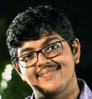

Swarnim Sinha
Email: f20220069@goa.bits-pilani.ac.in
Contact Number: 7506058746
BITS Pilani, K.K.Birla Goa Campus
Education
- BITS Pilani, Goa (2022-2026)
B.E. Electronics & Instrumentation
CGPA: 7.74
- National Public School, Indiranagar, Bangalore
- Class XII (CBSE Board 2021)
Percentage: 94.4%
- Class X (CBSE Board 2019)
Percentage: 92.6%
Fields of Interest
I'm deeply passionate about VLSI design and semiconductor technology, as well as Web Development. I’m open to exploring other aspects of coding like app development, software engineering, AI/ML, etc. I’m seeking hands on experience by working on real life projects.
Skills
- Possess Foundation Coding Skills in C/C++, HTML, CSS , Verilog, x86 Assembly.
- Possess Intermediate skills of CAD Modelling on Fusion360 Software.
Academic Achievements
Awarded a Bronze medal for achieving 3rd rank in the class in the International Olympiad of Science, organized by Silver Zone Foundation and supported by Society of Science Education.
Positions of Responsibility
Structural Lead – PROJECT ROCKETRY
- Leading the structural subsystem of Project Rocketry. A project aiming to make a retro-propulsively self-landing sounding rocket from scratch.
Skills: Team management, Asset Management, Leadership.
Core Member – SEDS Celestia
- Managed several events organized by SEDS Celestia - the Astronomy and Science Club of BITS Goa.
- Managed the flagship event – Star Party – an overnight stargazing event held at an Observation Point near the Karnataka border that involves roughly 100 participants.
Skills: Event Organization, Asset Management, Working in a team.
Subjects Done
- CS F111 Computer Programming
- INSTR F211 Electrical Machines
- INSTR F212 Electromagnetic Theory
- INSTR F214 Electronic Devices
- INSTR F215 Digital Design
- INSTR F241 Microprocessors and Interfacing
- INSTR F242 Control Systems
- INSTR F243 Signals and Systems
- INSTR F244 Microelectronic Circuits